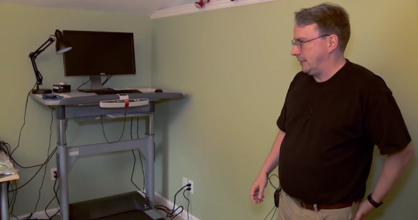

As a complement to our ricing showcase, this week’s meeting featured a tour of our members’ battlestations. What is a battlestation? It’s how and where you do your computing, whether that’s a humble laptop at your desk or a custom-built gaming rig with multiple monitors and RGBs aplenty.
For example, here is Linus Torvalds’ treadmill desk battlestation:

See NDLUG’s battlestations in this presentation.